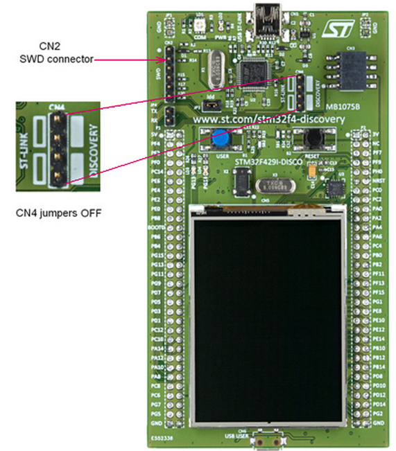
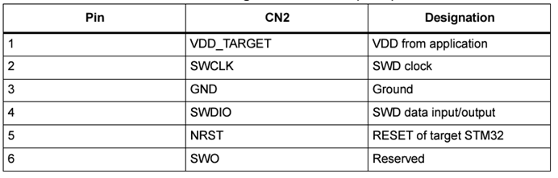
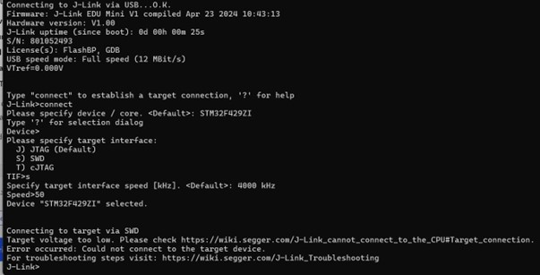
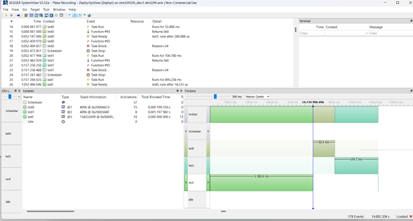
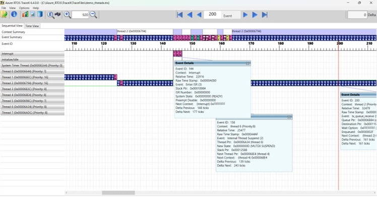

Introduction
Dans le cadre des travaux de recherche menés au LDR sur les plateformes embarquées, les chercheurs souhaitent mettre en place des environnements de développements et de tests plus récents et robustes pour 2 applications en particulier, dans l’ordre d’importance :
La programmation embarquée, en particulier avec OS Temps Réel. Mettre en place un environnement de dev/tests avec sondes logicielles pour le temps réel. Pour réaliser des tests de systèmes contraints, possiblement utilisant des architectures matérielles diverses (ARM, RISC-V, etc.), les chercheurs ont besoin d’un environnement clair, générant des traces analysables (quantité de mémoire utilisée, temps passé sur le processeur et lors des accès aux périphériques, décisions d’ordonnancement, etc.).
Simulateur pour robotique/drone. Mettre en place un environnement de dev/tests avec, par exemple CoppeliaSim et Python/ROS, génération de scénario et récupération des données de vol et de l’environnement simulé.
Différents travaux sont réalisés depuis plusieurs années avec l’ONERA sur des simulations utilisant de drones. Ces travaux utilisent d’anciens simulateurs difficiles à maintenir aujourd’hui, ce qui rend complexe la reproduction de certains résultats. Plusieurs exemples existent pour des applications spécifiques, comme avec le robot Poppy et ROS.
La documentation de la partie « Simulation » est disponible dans le dossier LDR_Simulation
Embarqué
La première étape de cette partie consiste à mettre en place un code, à partir du code NoGUI vu en TP_Programmation temps réel sur la carte ST STM32F429I Discovery avec ZephyrOS en se basant sur l’IDE PlatformIO qui :
Récupère des traces simples de chaque thread.
Exporte les données et les afficher sur SEGGER SystemView.
Qu’est-ce que Zephyr OS ?
Zephyr OS est un système d’exploitation temps réel open source. Il est reconnu pour sa légèreté, sa modularité et le fait qu’il supporte plusieurs plateformes, ce qui le rend adapté à une large gamme de microcontrôleurs. Avec une capacité à supporter plusieurs protocoles de communication.
Qu’est-ce que PlatformIO ?
PlatformIO est un IDE, son environnement de développement supporte le langage C/C++ pour les systèmes embarqués. Compatible avec plusieurs systèmes d’exploitation (Windows, Mac et Linux), il s’intègre également en tant qu’extension aux éditeurs de texte existants comme VSCode.
Définition du Tracing
L’utilisation du tracing dans un système d’exploitation temps réel comme ZephyrOS est bénéfique car il permet d’analyser le comportement du système en temps réel en enregistrant les évènements tel que les changements de threads. Cela aide à identifier les bugs ainsi que les problèmes de performances. On peut également détecter les threads qui consomment trop de temps cela nous permet d’optimiser le système.
Il nous permet de comprendre le comportement de threads entre eux, à quelle fréquence les ressources système sont utilisées, cela nous permet d’avoir un aperçu sur le fonctionnement interne du système Le tracing facilite l’analyse comparative et la reproductibilité des tests, on peut aussi vérifier si toutes les parties du code sont bien testées en conditions réelles
Les étapes à suivre pour récupérer des traces d’un code
Modifier le fichier .conf de notre projet NoGUI en ajoutant les lignes
CONFIG_TRACING=y
CONFIG_SEGGER_SYSTEMVIEW=y
CONFIG_SEGGER_SYSTEMVIEW_BOOT_ENABLE=n
CONFIG_SEGGER_SYSVIEW_POST_MORTEM_MODE=n
CONFIG_SEGGER_RTT_BUFFER_SIZE_UP=4096
Zephyr utilise RTT (Real-Time Transfer) comme moyen de transport principal pour SystemView, dans ce cas l’exportation des traces nécessite toujours l’utilisation d’un appareil J-Link car ZephyrOS ne supporte pas actuellement l’exportation des traces via d’autres moyens comme l’UART ou le réseau, qui pourraient permettre une transmission directe sans hardware spécifique.
D’où l’intérêt d’utiliser un J-Link Segger EDU pour pouvoir exporter les traces de chaque thread et les afficher sur SEGGER SystemView.
Ce qu’il faut installer pour la réalisation de cette partie :
Afin de pouvoir utiliser le J-Link pour programmer la STM32 sur une application externe. Il suffit de retirer les deux cavaliers de CN4 de la carte comme indiqué sur la figure suivante :

Ensuite connecter l’application au connecteur de débogage CN2 selon le tableau suivant :

Source : User manual
Après avoir brancher via un cable usb le J-Link, lancez l’application J-Link Commander V7.96e sur votre PC pour pouvoir se connecter au J-Link tout en laissant les paramêtres par défaut en cliquant sur “Entrée” (comme sur l’image en dessous) à chaque étape sauf une :
Sélectionnez le protocole SWD pendant la connexion du J-Link

Après avoir exécuter le code sur VSCode, et connecter le J-Link, les traces seront affichées en commençant l’enregistrement sur l’interface graphique de SEGGER SystemView. La figure suivante illustre un exemple de traces.

A quoi servent les traces ?
Dans notre code on a trois threads (2 LEDs et un switch), le traçage permet de :
Surveiller quand et combien de fois chaque thread est exécuté, c’est important pour analyser le comportement des threads.
Savoir par exemple la durée que prend chaque tâche pour exécuter une boucle, ou comment la pression du switch affecte le comportement des LEDs.
Si on voit que la LED 1 par exemple monopolise les ressources plus que prévu, on peut jouer sur le nombre d’itérations ou sur la priorité des threads.
Si un problème est détecté, on peut consulter les traces pour voir exactement ce qui se passait juste avant l’erreur
Les moyens de suivre des traces d’un code embarqué sans ZephyrOS
Freertos SystemView peut être utilisé pour enregistrer des applications qui utilisent FreeRTOS V8, V9, V10 ou V11. Jusqu’à la V10, la source FreeRTOS doit être légèrement modifiée pour afficher correctement l’exécution de l’ordonnanceur FreeRTOS. A partir de la V11, aucune modification du noyau n’est nécessaire.
TraceX présente les contraintes suivantes : TraceX ne peut pas mesurer avec précision les intervalles entre les événements supérieurs à la période de la minuterie.

Tableau pour ajouter de nouvelles architectures au projet PlatformIO : autres cartes ST, RISC-V
RISC-V Boards |
Zephyr version |
Platformio |
Zephyr + PlatformIO |
Prix |
|---|---|---|---|---|
Seeed Studio XIAO ESP32C3 |
✅ |
✅ |
❌ |
5,96 € |
TTGO T-OI PLUS RISC-V ESP32-C3 |
✅ |
✅ |
❌ |
$5.50 |
Espressif ESP32-C3-DevKitM-1 |
✅ |
✅ |
❌ |
15,90 € TTC |
Espressif ESP32-C3-DevKitC-02 |
✅ |
✅ |
❌ |
23,66 € |
DFRobot Beetle ESP32-C3 |
✅ |
✅ |
❌ |
10,50 € TTC |
GAPuino GAP8 |
❌ |
✅ |
❌ |
230 € |
Liens des documentations platformio de chacune des cartes précédentes
Application réelle
Afin de tester de vraies données et les afficher sur SEGGER SystemView, nous avons mis en place un système simulant l’entrée d’un parking, où une barrière s’ouvre lorsqu’elle détecte un mouvement à 20 cm grâce à un capteur ultrason HCSR04. Si aucun mouvement n’est détecté, la barrière se referme. Ce système fonctionne avec le capteur ultrason HCSR04 et un ServoMoteur, tous deux connectés à la carte STM32.
Connexion du ServoMoteur à ZephyrOS
Le capteur ultrason HCSR04 n’utilise pas d’interface de communication telle que I2C ou UART, mais se connecte via des broches GPIO. Comme il n’existe pas encore de driver pour ce capteur spécifique dans ZephyrOS, il a été nécessaire de développer un module Zephyr personnalisé pour intégrer le HCSR04 au projet. Ce driver permet de capturer les impulsions ultrasonores émises et reçues, puis de calculer la distance en fonction du temps de retour de l’écho.
à rajouter dans le fichier « overlay » du projet
&hcsr04 {
compatible = "elecfreaks,hc-sr04";
label = "HCSR04";
trig-gpios = <&gpio0 4 GPIO_ACTIVE_HIGH>;
echo-gpios = <&gpio0 5 GPIO_ACTIVE_HIGH>;
status = "okay";
};
Connexion du ServoMoteur à ZephyrOS
En raison de l’utilisation de l’écran intégré, qui mobilise de nombreuses autres broches PWM et plusieurs timers. Il a donc été compliqué de localiser une broche PWM disponible, donc il faut d’abord trouver la bonne broche sur la carte STM32 pour assurer son bon fonctionnement en s’appuyant sur un timer non déjà utilisé par l’écran.
Timer : TIM9
Canal PWM : TIM9_CH2
Broche : PE6
Pour rajouter un servomoteur à notre projet zephyrOS
créez un nouveau dossier dts/bindings et mettre dedans ce fichier .yaml :
description: PWM-driven servo motor.
compatible: "pwm-servo"
include: base.yaml
properties:
pwms:
required: true
type: phandle-array
description: PWM specifier driving the servo motor.
min-pulse:
required: true
type: int
description: Minimum pulse width (nanoseconds).
max-pulse:
required: true
type: int
description: Maximum pulse width (nanoseconds).
La largeur de répetition c’est 20ms elle est choisie 2500 et 700, c’est la durée qu’il prend sur chaque coté en microsecondes.
On peut changer la valeur de la pulsation et celle de la largeur de répétition en fonction de la rapidité qu’on souhaite avoir.
Dans le fichier .overlay compatible = « pwm-servo » on doit avoir le meme nom que sur le compatible de yaml
servo: servo {
compatible = "pwm-servo";
pwms = <&pwm9 2 PWM_MSEC(20) PWM_POLARITY_NORMAL>;
min-pulse = <PWM_USEC(700)>;
max-pulse = <PWM_USEC(2500)>;
};
&timers9 {
status = "okay";
st,prescaler = <1000>;
pwm9: pwm {
status = "okay";
pinctrl-0 = <&tim9_ch2_pe6>;
pinctrl-names = "default";
};
};
Pour activer le PWM dans le fichier prj.conf se fait avec la ligne suivante: CONFIG_PWM=y
Rajoutez cette bibliotheque #include <zephyr/drivers/pwm.h> dans le main principal
PS : Le nom de notre fichier overlay doit être le même que celui de notre board dans platformio.ini, ce n’est pas trop le même que celui de ZephyrOS
Dans ZephyrOS : disco_f429zi
Dans PlatformIO : stm32f429i_disc1
Maintenant que le capteur HCSR04 et le ServoMoteur sont connectés et opérationnels, nous pouvons créer des tâches dans le code principal (main) pour les gérer. Ces tâches seront ensuite exportées et affichées sur SEGGER SystemView, permettant de récupérer des mesures et de les analyser.
Liens importants :
PS au moment de renommer un dossier, évitez les espaces ou caractères spéciaux